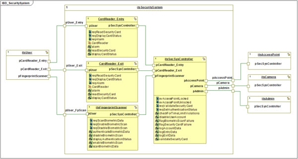

Guidelines and Drawing Conventions
-
Show part decomposition by placing sub parts inside of their owning part.
-
When possible, try to arrange parts in a vertical fashion. Also, try to place ports that communicate outside of the
system tier on the left side of the block and ports that communicate within the system tier on the right side of
the block.
-
Keep part names simple within internal block diagrams, even when they are referencing parts or system blocks across
packages.
-
Depending on the level of detail you are trying to convey in the diagram, you may hide or show attributes, and
operations. All communication between parts occurs through ports and well defined interfaces.
-
Depending on the level of detail you are trying to convey in a specific diagram, you may hide or show the
pictograms of port interfaces (lollipop/socket) to avoid clutter.
Naming Conventions
-
The name of an internal block diagram shall have the pre-fix
IBD: "IBD_<Diagram Name>".
-
Name parts with reference to the defining block: its<Block Name>.
-
Port names should be prefixed with p: p<Counterpart Name>.
-
Port names should be placed beside the associated part.

|